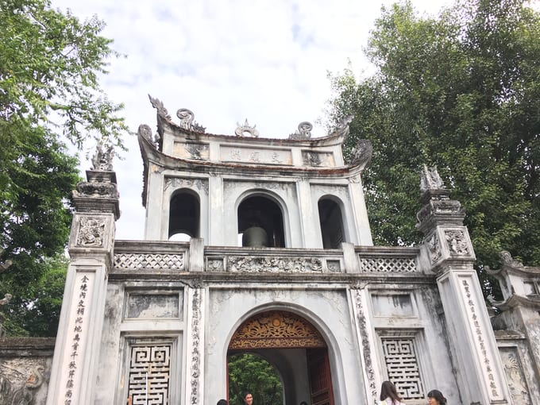
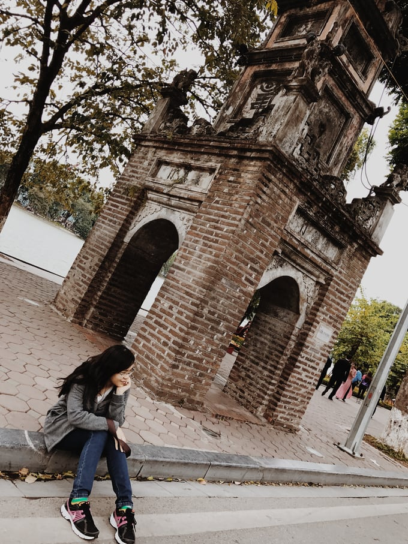
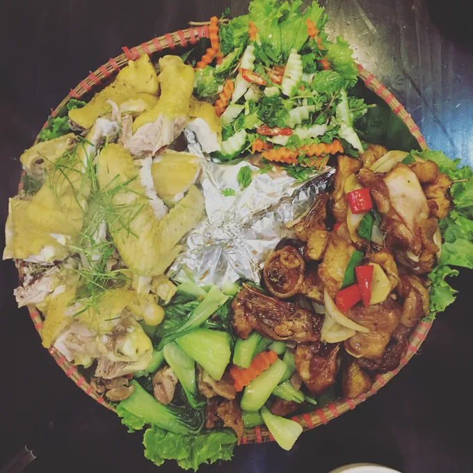
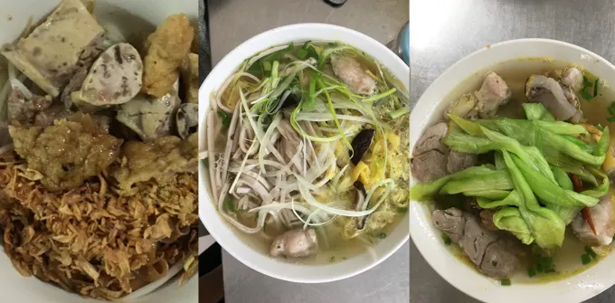
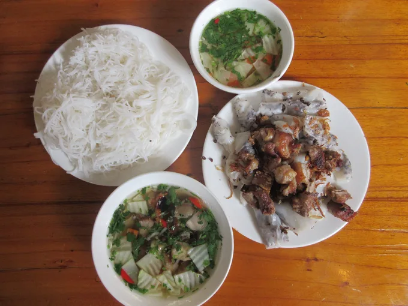

Kinh Nghiệm Tour du lịch tự túc Hà Nội và Sapa
Bạn đang có kế hoạch ghé thăm thủ đô cổ kính Hà Nội và vùng đất thơ mộng, hùng vĩ bậc “nhất nhì” Việt Nam, Sapa? Cùng #teamMollyclo bước lên hành trình chinh phục thiên đường này xem dễ dàng, tiện lợi và tiết kiệm ra sao cùng với những kinh nghiệm bỏ túi đáng giá. Tham khảo ngay chia sẻ của bạn ấy dưới đây nhé!
Hãy một lần đến Sapa, bạn sẽ cảm thấy mãi luyến tiếc nơi này nhờ cảnh đẹp núi rừng!
Làm gì ở Hà Nội
Nên đi đâu gần Hà Nội?
Trung tâm Hà Nội có rất nhiều điểm tham quan cho bạn: Hồ Hoàn Kiếm (có nhiều quán kem ngon), Hồ Tây (tối ngồi ở bờ hồ và ăn bắp nướng thì bao tuyệt vời nha), Tháp Hoà Phong – Chùa Báo Ân, Đền Ngọc Sơn, Bảo tàng Hồ Chí Minh, Lăng Bác (một lần ra Hà Nội thì phải đến đây rồi), Nhà hát lớn, Nhà thờ lớn (kiến trúc rất đẹp được thiết kế theo phong cách kiến trúc Gothic trung cổ châu Âu), Văn miếu Quốc tử Giám và Chùa Một Cột!
Trong trung tâm thành phố, bạn sẽ có vô số điểm dừng chân để khám phá!
Và nếu bạn tìm điểm vui chơi là chính, thì hãy đến chợ đêm Đồng Xuân, phố bia Tạ Hiện, phố ẩm thực Hàng Buồm hay chợ đêm phố cổ (trên các phố Hàng Đào, Hàng Ngang, Hàng Đường, Hàng Khoai tới Hàng Giầy).
Hà Nội không vội được đâu!
Đi lại ở Hà Nội thì bạn có thể tự thuê xe, đi taxi (nhớ để ý đồng hồ và chọn thương hiệu có tiếng vì chặt chém lắm) hoặc đi xe Grab.
Có thể đi đâu ngoại thành Hà Nội?
Đi xa ra khỏi trung tâm, bạn còn có nhiều lựa chọn hơn như: thiên đường Bảo Sơn, khu du lịch Vườn Quốc Gia Ba Vì, khu du lịch Tam Đảo hay làng gốm Bát Tràng, làng tranh Đông Hồ. Đi xa hơn nữa, thì bạn có thể chọn:
- Vịnh Hạ Long: Bạn chỉ mất khoảng 3 tiếng để đi từ Hà Nội đến Vịnh Hạ Long bằng xe buýt, xe limousine, hoặc đơn giản là dùng Tour ngày . Dưới đây mình chia sẻ lịch trình trong ngày, với những điểm tham quan cho bạn nhé: 8h sáng khởi hành từ Hà Nội, trên đường đi bạn có thể dừng ở những nơi sau: Chân Thiện Mỹ (Quế Võ, Bắc Ninh), Hồng Ngọc Sao Đỏ (Hải Dương), Kỳ Tam Anh (Chí Linh Sao Đỏ), Hoàng Tân (Hoàng Tân); tầm trưa đến cảng Hạ Long và lên thuyền. Bạn có thể bắt đầu hành trình tham quan động Thiên Cung, chèo kayak ở Làng chài Ba Hang, tham quan Hang Tối và Hang Sáng, bơi tại Vịnh Lan Hạ. Đặc biệt, đừng bỏ qua những bữa buffet hải sản BBQ và trải nghiệm câu mực đêm độc đáo! Nếu có thể, hãy nghỉ lại 1 đêm trên những du thuyền ở đây nữa bạn nhé!
Bạn sẽ choáng ngộp trước vẻ đẹp của Tràng An khi đi thuyền chèo khám phá!
- Ninh Bình: thời gian di chuyển chỉ khoảng 2 tiếng, bạn có thể chọn đi xe sau đó ra Ninh Bình thuê xe máy tự đi hoặc đi tour trọn gói. Một số điểm phải tham quan bao gồm: Quần thể danh thắng Tràng An, Tam Cốc – Bích Động, Cố đô Hoa Lư, Chùa Bái Đính, Hang Múa, Động Am Tiên – ” Tuyệt tình cốc ở Ninh Bình” và Đầm Vân Long.
Đừng quên mua một chiếc nón lá để che nắng và chụp ảnh luôn, khi đến Ninh Bình bạn nhé!
Ăn gì ở Hà Nội
Thiên đường ăn uống tại Hà Nội luôn đấy, bao nhiêu là món ẩm thực ngon và độc đáo cho bạn thoả thích mà thưởng thức. Bạn có thể theo danh sách ẩm thực của mình mà tự tìm đến hoặc chọn tour ăn uống phố cổ hay tour ăn đêm có sẵn để có người dẫn đi (nếu bạn có không nhiều thời gian để ăn hết Hà Nội chẳng hạn :))
Một số điểm mình cực kì giới thiệu là: Gà lên mâm Hoè Nhai, Chim nướng Tạ Hiện, Bún chả Hàng Mành, Hoa quả dầm Tô Tịch, Bún thang Cầu Gỗ, Bánh đa trộn Hàng Đồng, Bánh gối Hàng Chiếu, Nộm bò khô Hoàn Kiếm và cafe trứng Cafe Giảng!
Một phần Gà lên mâm Hoè Nhai này cũng phải 3 người ăn đó nhé!
Ẩm thực Hà Nội độc đáo đến mức, bạn dành bao nhiêu ngày vẫn có vẻ chưa thưởng thức hết!!
Kết thúc hành trình khám phá Hà Nội rồi, giờ mình đến Sapa thôi!
Để đến Sa Pa, bạn phải đến Hà Nội trước rồi sau đó mới lên Sapa. Có 2 cách để lên Sapa từ Hà Nội:
- Đi tàu lửa: Tàu hỏa có nhiều loại ghế như ghế mềm, giường nằm điều hòa… Tàu chạy lúc 9 hoặc 10 giờ tối đến nơi vào sáng sớm hôm sau
- Đi xe: bạn có thể chọn giữa limousine hoặc xe giường nằm. Với mình thì limosine tuy nhỏ, ít người hơn nhưng bạn sẽ không nằm duỗi người ra được, do đó, xe giường nằm là lựa chọn phù hợp hơn. Chỉ cần lên xe rồi ngủ một giấc, là sáng dậy thì đã có mặt ở Sapa rồi 😉. Thường xe sẽ cho bạn xuống tại bến xe hoặc nhà thờ đá, bạn có thể đi taxi hoặc xe ôm để vào trong trung tâm đến khách sạn của mình.
Khắp Sapa đâu đâu cũng là cảnh đẹp khiến bạn rụng tim!
Di chuyển tại Sapa
Ở Sapa, bạn có thể chọn đi lại bằng cách thuê xe máy, đi xe ôm hoặc đi taxi. Đường đi ở đây là dốc nhiều nên hơi khó đi bạn nhé, nhưng nếu bạn tự đi thì sẽ thú vị hơn rất nhiều vì khắp mọi nẻo đường là những khung cảnh mây trời và núi rừng hoà hợp đẹp đến nao lòng thế này nè 👇
Cảnh quan hữu tình toàn Sapa từ trên cao.
Ăn gì tại Sapa
Sapa lạnh nên những món nóng cực kì nổi tiếng ở đây. Bạn có thể thử ngay menu sau nha: Sáng thưởng thức Bánh cuốn thịt nướng; trưa là món Lẩu cá tầm và Cá suối chiên; và tối là Cơm lam và xiên nướng! Các hôm sau thì có thể thay đổi thêm món: gà đen (đặc sản chỉ vùng núi có), thắng cố, lợn cắp nách. Tất cả những món ngon bạn đều có thể tìm thấy quanh bờ hồ ở trung tâm.
Ps. Không cần đến các nhà hàng sang trọng, hãy chịu khó đi sâu vào các con đường nhỏ với nhiều quán ăn cho người địa phương, thì món ăn sẽ ngon hơn và có giá rẻ hơn rất nhiều!
Đi đâu, chơi gì ở Sapa?
Trong khu vực trung tâm thì Sapa có một số điểm tham quan đáng-phải-đến sau:
- Nhà thờ đá Sapa: được coi là dấu ấn kiến trúc cổ toàn vẹn nhất của người Pháp, và trở thành hình ảnh không thể thiếu khi nhắc đến thị trấn Sapa.
- Núi Hàm Rồng: đứng trên đỉnh núi Hàm Rồng, bạn sẽ ngắm toàn cảnh Sapa, nhìn ra xa hơn đến tận thung lũng Mường Hoa, bản Tả Phìn – bạn sẽ cảm thấy rất diệu kì khi phóng tầm nhìn từ đây: một bên là thị trấn và một bên là núi rừng hùng vĩ! Nơi này chính là vườn tiên, mây vây quanh, hoa rực rỡ, và nếu chịu khó đi vào sâu bên trong, bạn sẽ tìm thấy Chùa Hàm Long.
Núi Hàm Rồng là điểm ngắm cảnh tuyệt vời cho mọi khách du lịch đặt chân đến Sa Pa lần đầu!
- Làng bản là điểm không thể thiếu từ xứ Sapa: bản Cát Cát (là bản lâu đời của người Mông còn lưu giữ nhiều nghệ thủ công truyền thống như trồng bông, lanh, dệt vải; cách trung tâm thị trấn Sapa 2km), bản Tả Phìn (nơi tìm thấy văn hóa đậm đà bản sắc dân tộc của người Dao Đỏ với nghề thổ cẩm), bản Tả Van (cách khoảng 8 km là đến làng của người Giáy), bản Sín Chải (cách hơn 4km đường bộ, bản của người Mông đen trồng lúa nương và ngô lai).
- Đỉnh Fansipan, nóc nhà Đông Dương: là ngọn núi cao nhất của bán đảo Đông Dương (3143 m), ở trung tâm dãy Hoàng Liên Sơn. Để lên đỉnh Fansipan, bạn có thể chọn giữa: 1/ đi theo tour 2/ tự tổ chức với sự dẫn đường của dân địa phương người dân tộc hoặc 3/ đi cáp treo tuyến cáp hoạt động từ năm 2016, đã giúp du khách dễ dàng đặt chân tới đỉnh Fansipan với thời gian chinh phục được rút ngắn từ 2 ngày xuống chỉ còn 15 phút!
© 2021 Mollyclo. All Rights Reserved.
VỀ MOLLYCLO
- Về chúng tôi
- Mollyclo Blog
- Hợp tác cùng chúng tôi
- Cơ hội nghề nghiệp
ĐỐI TÁC
- Đối tác đăng nhập
- Đối tác liên kết
- Chương trình cho người nổi tiếng
- Chương trình cho Đại lý
ĐIỀU KHOẢN SỬ DỤNG
- Điều khoản sử dụng
- Quyền riêng tư
- Chính sách Cookie
- Thưởng phát hiện lỗi phần mềm
- Chính sách và quy định
KÊNH THANH TOÁN